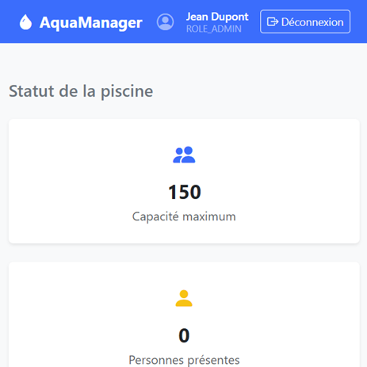
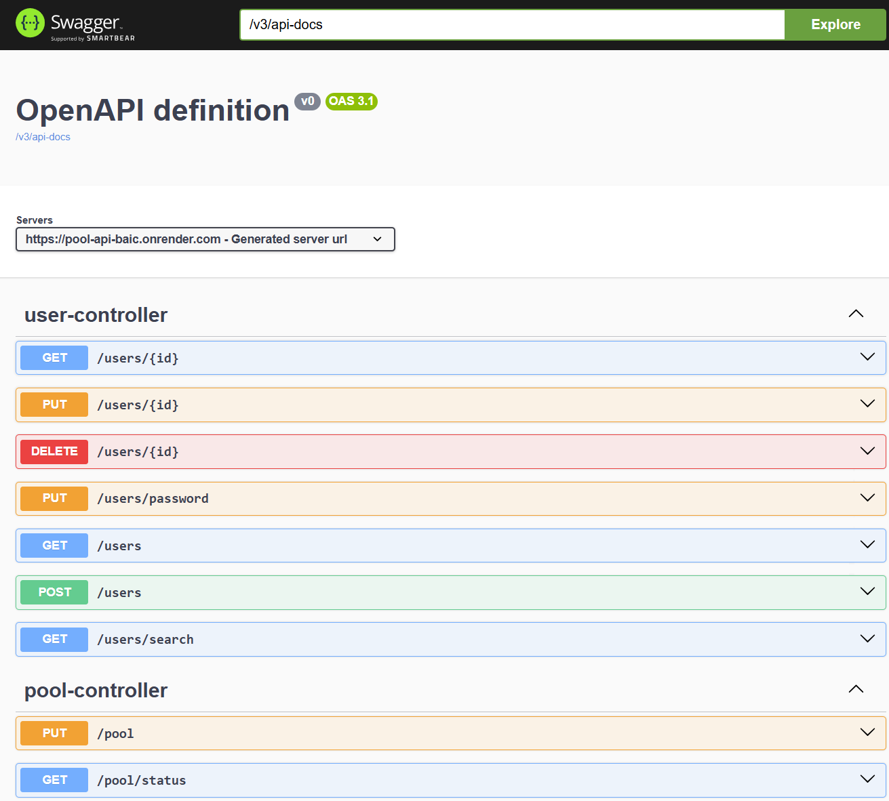
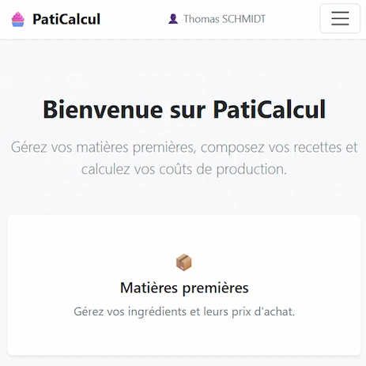
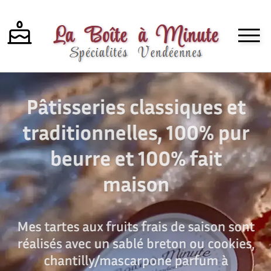
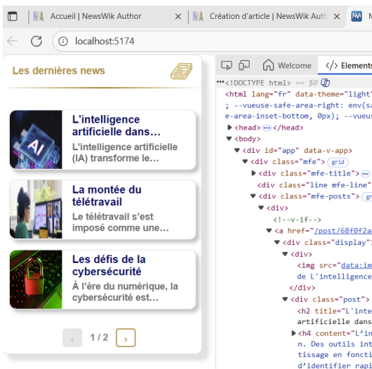
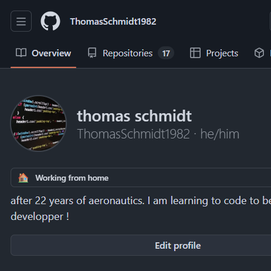

AquaManager — Gestion de piscine [MVP]
Frontend en HTML/JS vanilla + bootstrap qui consomme l'API pool-api
Site déployé
Je suis titulaire d'un BTS génie électronique où j'ai appris la programmation en langage C et HTML.
J'ai travaillé 22 ans dans l'aéronautique et oeuvré sur du matériel électronique pour des aéronefs civils et militaires (A380, A340, B787, Mirage, Rafale, Tigre, NH90, etc...). En Fabrication, Réparation, puis Certification.
J'ai rédigé, corrigé, amélioré des programmes de tests automatisés (langage C, Labview).

Frontend en HTML/JS vanilla + bootstrap qui consomme l'API pool-api
Site déployé

Backend Java Spring, BDD PostgreSQL voir descriptif complet sur github
Site déployé

Micro Saas : API Spring Boot, JWT, BDD PostgreSQL, Front Vanilla JS, Bootstrap 5
Site déployé

Site vitrine utilisant HTML/JS/CSS vanilla
Site déployé

API Java, Base de données MongoDB, Frontend Vue.js
Détails du projet en pdf

Disponible sur mon Github ...